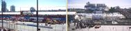
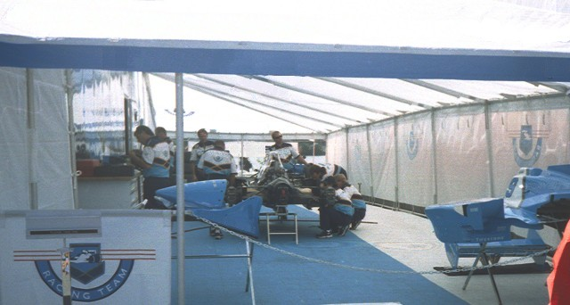
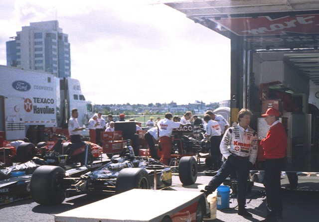

Pacific Place, Vancouver, British Columbia, Canada

Photo's from the Grandstand

Forsythe Racing tent. Greg Moore's Reynard Ford is been worked on. He retired from the
race with an oil leak.

Michael Andretti alongside his race winning Newman/Haas Lola Ford
| Photographs ©Fred Young. Reproduced here with kind permission. | Photographs have been digitally
altered to remove tobacco advertising. |